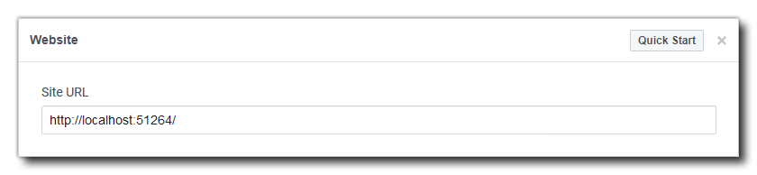
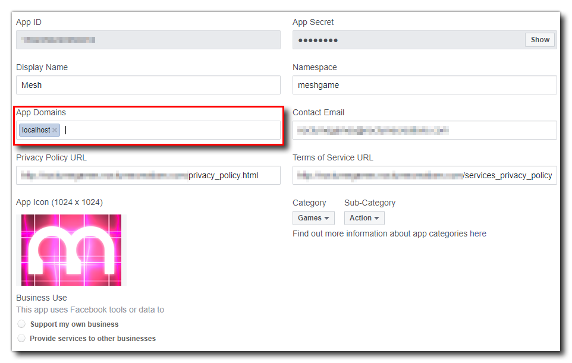
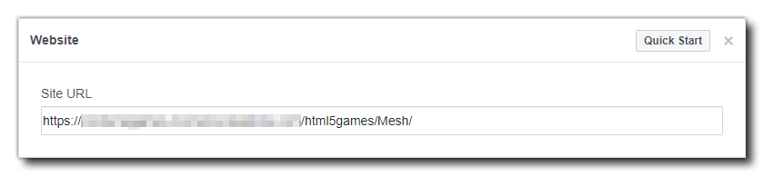
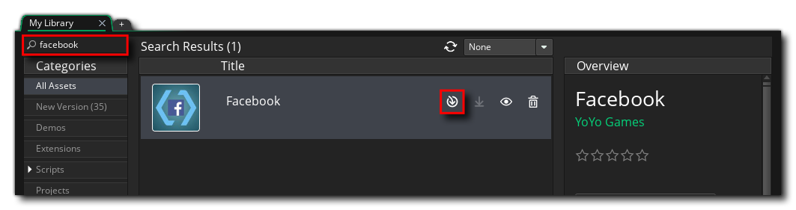
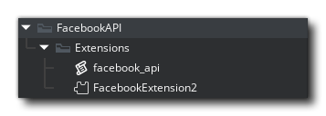
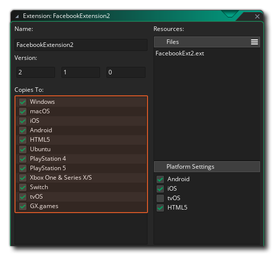

This guide provides you with the information required to integrate Facebook with your Android, iOS and/or HTML5 game using the Facebook extension.
The Facebook extension can be used to communicate with the various Facebook APIs made available by the platform.
See: Meta Developer Documentation for more information
Creating An App
The first step is to Create an App on Facebook:
See: Create an App
After your new app has been created, you'll find more info on the App Dashboard on the steps to take to publish your app. You should take note of the App ID and App Secret as you'll need them later in GameMaker.
For every platform that you want to use your app on you need to add that platform in the App Dashboard and provide additional information.
See: Platform Settings
iOS
For iOS you will need to have a Bundle ID and an App ID (see the Apple documentation for more information) which you will need to add in here (make sure that the Bundle ID matches that of the iOS Game Options for your game).
Android
For Android you will need to have set up a Google Play Store listing for your game and will need your Package Name and Key Hash. The package name is the reverse URL identifier used for your game on the Play Store (and it should match that used in the Android Game Options for your game). You can get the hash key from the Android Preferences' Keystore section.
Note that you need to add a Class Name here which should be formatted as:
.RunnerActivity
Website (HTML5)
If you choose Website, then you have two options, depending on whether you want to test your game running it from GameMaker, or whether you want to have the game hosted "live" on a server.
For testing the game from GameMaker, you need to set the Site URL to:
http://localhost:51264/
Then go to the Basic game settings and set the App Domain to localhost:

This will permit you test your game when running it from within GameMaker.
If you want to host it on a server as a published game, then you'll be required to fill in the Site URL so it points to the location of your game. Note that Facebook will require your game to be hosted on a site with a valid SSL certificate and the link should be HTTPS.

With that done, you can now click Save Changes and move on to setting up GameMaker.
GameMaker
Now in GameMaker, the first thing you need to do is add the Facebook extension to your project. For that, you need to add the extension to your account on the Marketplace. Once added, go to Marketplace -> My Library in GameMaker and then download and install the Facebook asset (you can find it easily using the search function):

IMPORTANT
You should make sure to add all of the extensions' files.
You should now open the Facebook extension asset from the Asset Browser (FacebookExtension2):

First of all, make sure that it's going to be exported only to those platforms where you are going to use it:

Now open the menu for your target platform under "Extra Platforms" (Android/iOS) and add your Facebook app details in the Extension Options. You can find any relevant app details under Settings -> Basic on your Facebook dashboard.
See: Basic Settings
Common
In the Extension Options, set the App ID to your Facebook App ID.
Android
In the General section of the Android Game Options, set up the API levels to use. The Facebook extension requires the following API settings as a minimum to work:
- Build Tools: 26.0.2
- Support Library: 26.0.0
- Target SDK: 26
- Minimum SDK: 19
- Compile SDK: 26
Once you've filled that in (and made sure you have the relevant APIs installed in Android Studio), you can continue on to add the code that will access the Facebook API.
iOS
On iOS, set your Client Token (which you can get from your Facebook dashboard under Settings -> Advanced -> Client Token) and Display Name (which is the name of your application) in the Extension Options.
OAuth
OAuth uses the App ID set above and additionally requires an OAuth Redirect URL. This is the URL to which Facebook will send the code it generates after you make the initial request using fb_login_oauth (on non-SDK platforms or as an alternative login method on SDK platforms).
One example of how you could handle the server code needed to exchange the authorisation code for the access token is by making use of the Firebase Cloud Functions.
See: Login Guide
Adding Facebook Functions
When adding Facebook integration to your game, we recommend that you create a persistent controller object that will be added to the very first room of your game and persist throughout. This is because a lot of the Facebook functionality is asynchronous and so it's better to have a single object that is dedicated to dealing with the different callbacks, although your buttons and things themselves don't have to be persistent. The rest of this tutorial assumes you have such an object in your game.
Logging In
To start adding Facebook functionality to your game you will first need to ensure that the extension is installed correctly and set to export to the supported platforms. The extension contains the function fb_init which you should call first in the Create Event of the controller object:
fb_init();Note
This is a change from previous versions of the extension to be able to guarantee a correct initialisation order of the different extensions that you might use in a project.
In the Create Event we'll also initialise some variables that we'll need later as well as an DSList with the basic permissions required (more on this later) and some variables to control the different permission requests:
fb_init();
fb_logged_in = false;
fb_read_permissions = false;
fb_publish_permissions = false;
fb_userid = "";
fb_username = "";
fb_picture = -1;
fb_permissions = ds_list_create();
ds_list_add(fb_permissions,
"public_profile",
"user_friends"
);Once you've called that, you can then check that the Facebook Graph API has initialised correctly using the extension function fb_ready (in an alarm or the Step event). This will return true or false, depending on whether the Graph API is initialised or not, and can be checked before changing the room or starting the game proper. Once it returns true, you can then call the function to log the user in.
Normally you wouldn't log the user in automatically on game start - although you can - but instead have a button in the game that the user can press to log in and use Facebook. However you do it though, you'll need to call the extension function fb_login. This function requires you to supply a DS list with the permissions that you want to have for the user logging in.
IMPORTANT
You can only request the default read permissions with this function. If you require additional read or write permissions after logging in you will need to specifically request them (see the Additional Permissions section, below). Also note that if your game requires more than the
"public_profile","email"and/or"user_friends"it will require review by Facebook before it can be used by people other than the game's developers.
The actual login code will look something like this:
if (fb_status() != "AUTHORISED")
{
fb_login(real(fb_permissions));
}Note that we first check to see if the game has already been authorised since the login state can be persisted over various runs of the game, and if not then we log the user in.
Note
You can check the different status results and react in different ways depending on what is returned. This isn't covered in this article to keep things simple.
When you call this function, it will generate a Social Async Event with the results of the login attempt. In this event, the async_load DS map will contain a "type" key, which will hold the string "facebook_login_result" when the event is triggered by logging in. There will also be a "status" key which returns whether the login was a "success", was "cancelled" or if it failed with an "error".
If the login status key is "success", then the user has logged in and you can go ahead and check each of the permissions you have requested to see if they have been "granted" or not.
You can check this with the following code:
switch (async_load[? "type"])
{
case "facebook_login_result":
show_debug_message("facebook_login_result async event triggered");
if (async_load[? "status"] == "success")
{
if (!fb_logged_in)
{
fb_logged_in = true;
show_debug_message("User successfully logged in!");
for (var i = 0; i < ds_list_size(fb_permissions); ++i;)
{
var _key = fb_permissions[|i];
if (ds_map_exists(async_load, _key))
{
if (async_load[? _key] == "granted")
{
show_debug_message("Permission "+ _key + ": " + async_load[? _key]);
}
else
{
show_debug_message("Permission "+ _key + ": "+ async_load[? _key]);
}
}
else
{
show_debug_message("Permission " + _key + ": Does Not Exist");
}
}
}
}
else
{
show_debug_message("Login failed: " + string(async_load[? "status"]));
}
break;
}The above code looks complex, but all it's doing is checking to see if the event was triggered by a login, and if it was then it parses the async_load map and outputs the permission, whether it was granted or not. In general, you don't really need all that code, but we've added debug messages in to cover every eventuality so that you can see whether the code is working (or not!) in the console output. Note that there are further keys returned in the async_load map, which you can find in the function reference for fb_login.
Getting User Data
Once the user has logged in you can start to do graph requests to get more information about them, which you can then incorporate into your game. To formulate a graph request you'd use the fb_graph_request, something like this in the controller's Social Async Event, when the login has been confirmed (you could also add it to a Key Press or Mouse Press event):
params = ds_list_create();
ds_list_add(params, "fields", "id,name,picture");
fb_graph_request("me", "GET", real(params));
ds_list_destroy(params);Here we first create the DS list with the requested parameters. A more complex example could be:
params = ds_list_create();
ds_list_add(params,
"id", "123",
"name", "John Doe",
"picture", "http://url-to-picture.jpg"
);In the case of our test code, we're targeting the "/me/" node, which means that all data you retrieve comes from the logged-in user.
Note
A node is an individual Facebook object with a unique ID. For example, a single user, the logged-in user or a business would all be considered nodes. Returned data for the different nodes will be limited by the permissions requested and set on the account targeted.
So, we create a DS list with the data we want to request then call the fb_graph_request function as a "GET" call, supplying the data.
IMPORTANT
With the basic permissions, you can only request very specific data from the open graph. You can find a list of available default requests here.
In the Social Async Event again, we need to retrieve the data from the DS map and use it to set some variables. For this, we'll simply add a new case into the switch that checks for "type":
case "fb_graph_request":
show_debug_message("fb_graph_request async event triggered");
if (async_load[? "status"] == "success")
{
show_debug_message("Graph Request Successful!");
var _text = async_load[? "response_text"];
var _response = json_parse(_text);
show_debug_message("Response = " + string(_response));
fb_username = _response.name;
fb_userid = _response.id;
var _pic = _response.picture;
var _data = _pic.data;
fb_picture = sprite_add(_data.url, 0, false, false, 0, 0);
}
else
{
if (async_load[? "status"] == "error")
{
show_debug_message("Graph Request Error!");
show_debug_message("Exception = " + string(async_load[? "exception"]));
}
else
{
show_debug_message("Graph request Cancelled!");
}
}
break;Here we use the returned data to set the variables that hold the user name and user ID. These can then be used to display personalised messages and content in your game. Note that we also extract the "data" struct from the "picture" key and then use that to create a new sprite for the user avatar. In this case, the variable only holds the request ID as loading the picture will be handled by the Image Loaded Event, which you would deal with as follows:
if (async_load[? "id"] != fb_picture) { exit; }
if (async_load[? "status"] < 0) { exit; }
sprite_index = fb_picture;All that does is take the returned avatar sprite and set the user profile to use it. Don't forget that this sprite will need to be deleted when no longer required (using sprite_delete).
Graph requests are a very powerful tool and this is just one example of how to use them to get data. However, we can't go into all the details of each and every node here, so we recommend that you check the extensive documentation on the Facebook developer pages, as well as the Graph API Explorer, which lets you test nodes and see what data is returned, etc.:
Also, note that the Facebook Extension Demo project also shows different uses of the graph request function to get friend's data and delete permissions among other things.
Additional Permissions
It may be that your game requires additional read or publish permissions, so you'll need to request these and have the user agree to grant them. For this, we use the functions fb_request_read_permissions and fb_request_publish_permissions. Now, before continuing, it's very important to note that these functions will log the user into Facebook again, and so if any of the permissions are not granted or there is an error, the function fb_status will return "FAILED", but the user will still be logged in, they just won't have the requested permissions.
In general, you'd want to request additional permissions directly after getting a successful user login callback in the Social Async Event, so that's where we'll be adding the following code, after the initial fb_logged_in check, in the same async type, "facebook_login_result":
case "facebook_login_result":
show_debug_message("facebook_login_result async event triggered");
if (async_load[? "status"] == "success")
{
if (!fb_logged_in)
{
// Login code shown above here
}
if (fb_logged_in)
{
var _permissions;
if (!fb_check_permission("user_birthday"))
{
_permissions = ds_list_create();
ds_list_add(_permissions, "user_birthday");
fb_request_read_permissions(real(_permissions));
ds_list_destroy(_permissions);
show_debug_message("Requesting READ permissions - user_birthday");
}
else
{
show_debug_message("READ Permission Granted");
fb_read_permissions = true;
if (!fb_check_permission("publish_to_groups"))
{
_permissions = ds_list_create();
ds_list_add(_permissions, "publish_to_groups");
fb_request_publish_permissions(real(_permissions));
ds_list_destroy(_permissions);
show_debug_message("Requesting PUBLISH permissions - publish_to_groups");
}
else
{
fb_publish_permissions = true;
show_debug_message("PUBLISH Permission Granted");
}
}
}
}
else
{
show_debug_message("Login failed: " + string(async_load[? "status"]));
}
break;As you can see from the code above, we first check to see if the user already has the required read permission and if they don't we request it. This will trigger another login Social Async Event, where we can check to see if the permission was granted and then request publish permissions (which in turn will trigger another Social Async Event).
Note
The "publish" permissions are pretty much obsolete and only used for some very specific things. In general, you can ignore them and simply request read permissions.
For a full list of the permissions that you can request, see this Facebook Developer article:
Posting To Facebook
You now have your user data as well as the permissions you require for your game. you can use the user data to interact with the user by applying their avatar to achievements, in-game identifiers, etc., but you may also want to let the user share information about the game with other people on Facebook. For that, we have the function fb_dialog.
This function can be called from anywhere in your game and would look something like this:
if (fb_status() == "AUTHORISED")
{
fb_dialog("http://link.com");
}A few things to note when using this function:
- The user does NOT have to be logged in when it is called, as the function will request the user log in if they're not already.
- The URL you supply should link to a page related to the content being shared.
- The dialog message will be populated using the Open Graph meta tags embedded in the header of the URL you give. An example of this would be:
<meta property="og:title" content="Mesh - Fast Finger Fun!" /> <meta property="og:url" content="http://www.nocturnegames.com" /> <meta property="og:description" content="Mesh is a frenzied neon arcade game where quick fingers are needed to score points and combos as you try to beat your previous high scores!" /> <meta property="og:image" content="https://m.gjcdn.net/screenshot-thumbnail/900x2000/334601-v3.jpg" />
For more information on Open Graph meta tags, please see: